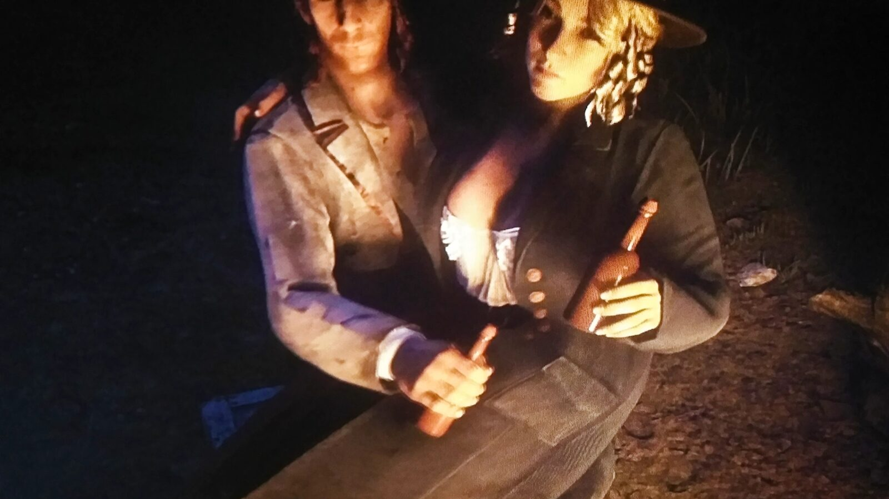
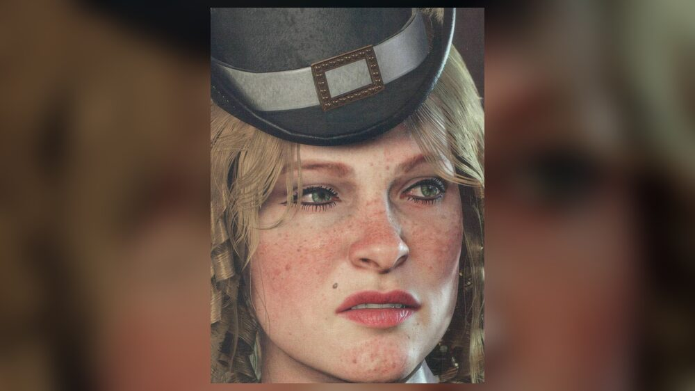
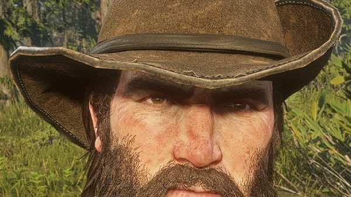
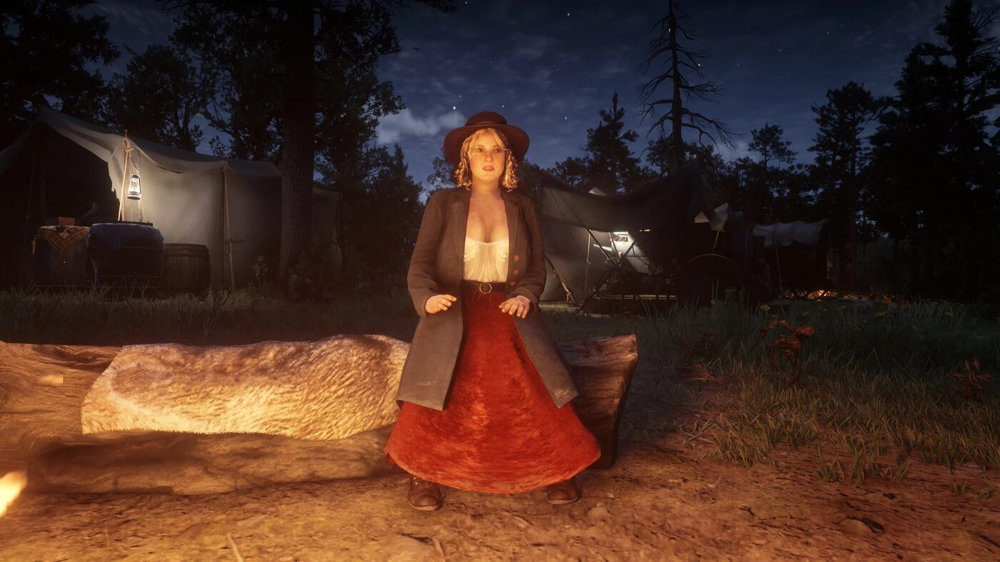

Personnage · Gang Van der Linde
Karen Jones
Karen Jones est voleuse et femme d'action au sein du gang Van der Linde dans Red Dead Redemption 2. Le guide officiel du jeu la présente comme une arnaqueuse douée, qui aime la vie de hors-la-loi et veille sur les autres femmes du gang.
Son sort après l'éclatement du gang n'est jamais montré.
- Affiliation
- Gang Van der Linde
- Rôle
- Arnaqueuse et braqueuse
- Statut
- Inconnu après 1899
- Nationalité
- Américaine
- Voix
- Jo Armeniox
- Jeux
- Red Dead Redemption 2
Biographie
Arnaques et braquages
Karen tient souvent un rôle dans les arnaques du gang. Lors de la virée à Valentine du chapitre 2, un homme qu'elle tente de dépouiller au Saints Hotel la frappe, et Arthur s'occupe de lui. Après le sauvetage de Sean MacGuire et son retour au camp, tous deux entament une brève liaison.
Au chapitre 3, elle braque la banque de Valentine avec Arthur, Bill Williamson et Lenny Summers, dans la mission "Sodom? Back to Gomorrah". C'est elle qui a préparé le coup avec Bill. Le joueur choisit si elle détourne l'attention du personnel en jouant l'ivrogne ou la jeune femme égarée.
Après Sean
Sean est abattu à Rhodes dans "A Short Walk in a Pretty Town". Dès lors, Karen boit beaucoup et on la trouve souvent ivre au camp. Elle quitte le gang au moment où il se disloque, à Beaver Hollow.
Sort
Le jeu ne montre jamais ce que devient Karen. Dans une lettre adressée à John Marston en 1907, Tilly Jackson écrit être sans nouvelles et penser que l'alcool l'a tuée. C'est une supposition de Tilly, pas un fait établi par le jeu.
Relations
Sean MacGuire
Son amant d'un temps. Sa mort à Rhodes la fait sombrer dans l'alcool.

Bill Williamson
Prépare avec elle le braquage de la banque de Valentine.

Arthur Morgan
Participe avec elle au braquage de Valentine.
Tilly Jackson
Son amie proche, qui écrira plus tard craindre que l'alcool l'ait emportée.
Susan Grimshaw
Dirige les femmes du camp ; Karen s'en prend à elle après la mort de Molly.
Conception et interprétation
Karen est interprétée par Jo Armeniox, qui assure la voix et la capture de mouvement.
Dans un entretien croisé avec les actrices du gang, publié par GamesRadar en mars 2019, Jo Armeniox revient sur ses scènes avec Roger Clark, l'interprète d'Arthur, des moments rares en tête-à-tête qu'elle qualifie de "vraiment à part". Dans le même article, Penny O'Brien, l'interprète de Molly O'Shea, raconte qu'Armeniox devait la gifler deux fois dans une scène.
Dans une interview vidéo accordée à Popternative en novembre 2019, elle explique avoir puisé dans une part colérique et rebelle d'elle-même pour le rôle.
Galerie
